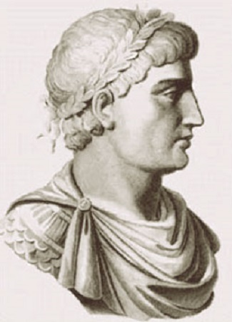

Welcome to the Mathematical World!
Theodosius: Ancient Master of Spherical Geometry
Pioneer of Spherical Geometry and Astronomy
Theodosius of Bithynia (c. 160 BCE – c. 100 BCE) was a Greek mathematician and astronomer, best remembered for his pioneering work in spherical geometry. His writings laid the foundation for understanding the geometry of spheres, which became essential in astronomy, geography, and navigation for centuries.
Background
Theodosius was born in Bithynia, a region in northwestern Asia Minor (modern-day Turkey). Very little is known about his personal life, but his influence survives through his writings, especially in astronomy and geometry.
He was most famous for his treatise Sphaerics, which systematically studied the geometry of the sphere. This work was heavily used by ancient astronomers to model the heavens, and it later influenced scholars in the Islamic Golden Age and Renaissance Europe.
Key Contributions
(a) Spherical Geometry
Theodosius extended Euclid’s plane geometry into three dimensions by analyzing circles, angles, and triangles drawn on the surface of a sphere.
For example:
- The sum of the angles of a spherical triangle is greater than \(180^\circ\) and less than \(540^\circ\).
Formula:
\[
\text{Sum of angles} = 180^\circ + E
\]
where \(E\) is called the spherical excess.
Relation between arc length (\(s\)), radius (\(r\)), and central angle (\(\theta\) in radians):
\[ s = r \times \theta \]
(b) Sphaerics (Book of Spheres)
This text explained how to calculate distances and angles on a sphere, crucial for astronomy. It was the standard reference for spherical astronomy until Ptolemy’s Almagest.
(c) Astronomy and Timekeeping
Theodosius also wrote about celestial phenomena and the length of days. His work On Days and Nights analyzed how the length of daylight varies with the seasons and latitude.
Equation (simplified form used in astronomy):
\[ \cos(h) = -\tan(\varphi) \times \tan(\delta) \]
Where:
- \(h\) = hour angle of the Sun
- \(\varphi\) = latitude of observer
- \(\delta\) = Sun’s declination
This helped explain why days are longer in summer and shorter in winter.
Influence and Legacy
- In Antiquity: His works were essential for ancient astronomers, providing the mathematical foundation for celestial sphere models.
- In the Islamic Golden Age: Scholars like Al-Battani and Al-Tusi used his spherical geometry to refine astronomical tables.
- In the Renaissance: Translations of Sphaerics helped European mathematicians and navigators improve astronomy and global exploration.
Legacy
Theodosius of Bithynia is remembered as the pioneer of spherical geometry. His clear and systematic approach gave future astronomers the tools to describe planetary motion, navigation, and the geometry of the heavens. Without his groundwork, much of classical and medieval astronomy would not have been possible.